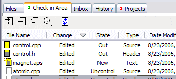

What if you change your mind and decide to abandon your edits rather than check them in? In Code Co-op virtually everything is undoable. If you don't want to check something in, you can always undo the checkout. The "uncheckout" simply restores the file to its original (pre-check-out) state. In this case, it will undo the Restore.
